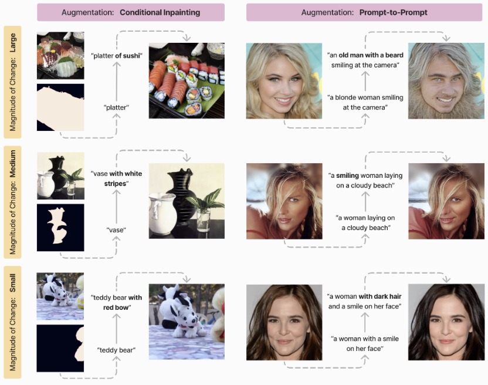

|
Anisha Pal
I am a Scientific ML Engineer at PlanetteAI where I work on developing AI based subseasonal climate forecasting models. I pursued my Masters at Georgia Tech where I was advised by Prof. Judy Hoffman on problems related to robustness and distribution shift in computer vision.
My research interests lie in leveraging synthetic data and developing standardized benchmarks and evaluation strategies to design resilient, robust, and interpretable algorithms, enabling the accelerated application of AI in climate forecasting, conservation, and sustainability.
My background includes diverse projects focused on computer vision, geospatial applications, climate forecasting, and sustainability. I had the opportunity to work at the Center for Quality Growth and Development, under the guidance of Prof. Arthi Rao , on a GIS-based community decision support tool aimed at sustainable county planning.
I also spent two years as a Machine Learning Engineer at HyperVerge, a Fintech and Geospatial startup, developing computer vision solutions for geospatial analysis and face spoof detection.
During my free time you will often find me climbing, hiking, reading or cooking. I am always open to collaborating on exciting projects, so feel free to reach out if our work and interests align !
CV /
Google Scholar /
LinkedIn /
Github
|

|
| 
|
Semi-Truths: A Large-Scale Dataset of AI-Augmented
Images for Evaluating Robustness of AI-Generated
Image detectors
Anisha Pal*,
Julia Kruk*,
Mansi Phute,
Manognya Bhattaram,
Diyi Yang,
Duen Horng Chau,
Judy Hoffman
* Indicates equal contribution
Neural Information Processing Systems (NeurIPS), 2024
pdf
/
link
/
code
/
data
/
|

|
SkyScenes: A Synthetic Dataset for Aerial Scene Understanding
Sahil Khose*,
Anisha Pal*,
Aayushi Agarwal*,
Deepanshi*,
Judy Hoffman,
Prithvijit Chattopadhyay
* Indicates equal contribution
European Conference in Computer Vision (ECCV), 2024
pdf
/
link
/
code
/
data
/
website
/
|

|
SegFast-V2: Semantic image segmentation with less parameters in deep learning for autonomous driving
Swarnendu Ghosh,
Anisha Pal,
Shourya Jaiswal,
KC Santosh,
Nibaran Das,
Mita Nasipuri
International Journal of Machine Learning and Cybernetics, 2019
pdf
/
link
/
code
/ |

|
SegFast: A Faster SqueezeNet based Semantic Image Segmentation Technique using Depth-wise Separable Convolutions
Anisha Pal,
Shourya Jaiswal,
Swarnendu Ghosh,
Nibaran Das,
Mita Nasipuri
ICVGIP, 2018
pdf
/
link
/
code
/
|
|
|
Scientific Machine Learning Engineer at Planette AI | June 2024 - Present
Building AI foundation model for subseasonal climate forecasting using spatiotemporal and multimodal data
|

|
Graduate Student Researcher at Hoffman Lab | Jan 2023 - May 2024
Advisor: Prof.Judy Hoffman
Exploring synthetic-to-real generalization of computer vision applications for aerial imagery and analyzing model sensitivity to intra domain shifts using synthetic data and GenAI applications
|

|
Machine Learning Intern at Corteva Agriscience | May 2023 - Aug 2023
Developed a cost-effective, globally accessible solution for field boundary detection by designing and implementing an image transformer-based image super-resolution algorithm on Sentinel-2 satellite imagery, bypassing the need for expensive high-resolution images.
|
|
|
Graduate Research Assistant at CQGRD | Aug 2022 - May 2023
Advisor: Prof. Arthi Rao
Developed a statistical metric integrated as an ArcGIS decision support tool to suggest safe freight infrastructure development locations that will quantify growth towards social, environmental, and economic resilience in Henry County.
|

|
Machine Learning Engineer at Hyperverge | Dec 2019 - July 2022
Led the development of a various computer vision projects including facial spoof detection and infrastructure change detection system using geospatial data.
|

|
Solution Specialist Intern at Microsoft, India | May 2019 - July 2019
Conducted a
comprehensive analysis of the smart city landscape in India, performing market research on cloud and AI
services adoption, and suggesting a growth-maximizing roadmap targeting industry leaders
|

|
Research Intern at Jadavpur University, India | May 2018 - June 2018
Advisor: Prof.Nibaran Das
Designed a computationally efficient deep learning-based semantic segmentation algorithm for self-
driving cars that achieved 10x faster speed, 5x less memory consumption, and 224x fewer parameters
with similar accuracy compared to the state-of-the-art segmentation algorithms.
|

|
NAS Latency Predictor
Expanded NATS-Bench with hardware-specific latency data and developed a latency predictor that generalizes to new hardware and architectures. without sample measurements on the critical inference path.
|

|
Medical VQA
Analyzed the importance of different VQA components and designed an easy to use lightweight framework that is able to achieve results comparable to state of the art on VQA-RAD dataset
|

|
Aye-Aye monitoring
As a member of UC, San Diego, Engineers for Exploration collaborated with San Diego Zoo to develop a real-time machine learning system to monitor and analyze behavioral cues in Aye-Aye for early detection of health issues.
|

|
Black Box Optimization
Identified the advantage
of trust-region based exploration-exploitation provided by Turbo and the superior candidate selection
method (TPE) used by Hyperopt to design a hybrid approach.
|

|
Adversarial Defense
Trained neural networks that are robust to post-hoc pruning using Targeted Dropout. The idea was
to cut off the snow-ball effect of error buildup in the network’s activations by removing the impact of
most weights.
|
Education
|
|
Master of Science in Computer Science | Specialization in Machine Learning
Georgia Institute of Technology, Atlanta | Aug 2022 - May 2024
Specialization in Machine Learning
Masters Project advised by Prof. Judy Hoffman
|

|
Bachelor of Technology in Electronics & Communication Engineering
Manipal Institute of Technology, Manipal | July 2016 - June 2020
Minor Specialization in Data Science
Reference
|
| |